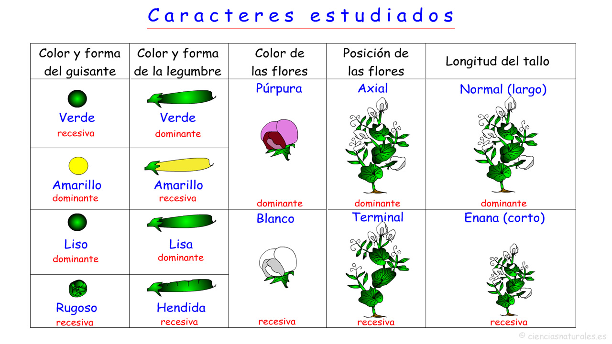
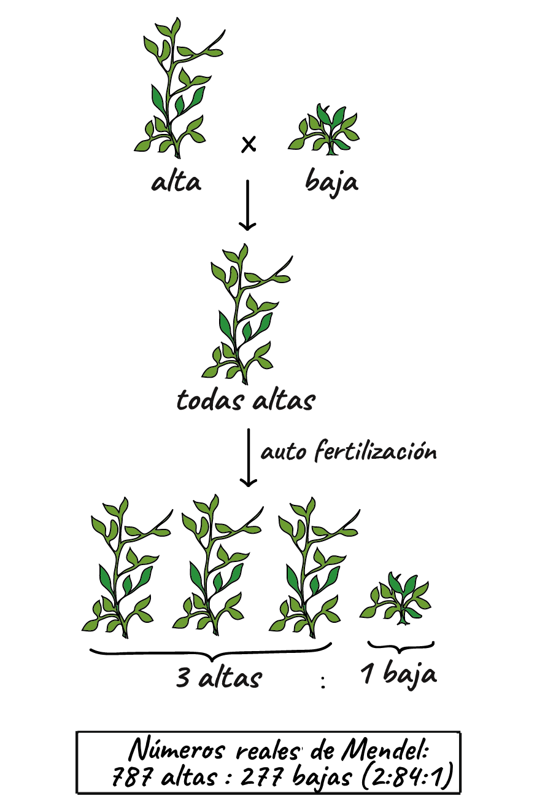

¡¡ Bienvenido al mundo de Naturales !!
son aquellas ciencias que tienen por objeto el estudio de la naturaleza, siguiendo la modalidad del método científico conocida como método empírico-analítico.
Las ciencias naturales se apoyan en el razonamiento lógico y el aparato metodológico de las ciencias formales, especialmente de la matemática y la lógica, cuya relación con la realidad de la naturaleza es indirecta. Las ciencias naturales buscan entender el funcionamiento del universo y el mundo que nos rodea. Se pueden distinguir cinco ramas principales: Física, Química, Astronomía, Geología y Biología.
Genetica Mendeliana
La genética Mendeliana se la debemos a Gregor Mendel que realizó sus investigaciones con la planta de guisante (Pisum sativum) en el monasterio Agustino de Brno. Los magníficos trabajos de Mendel no fueron reconocidos durante su vida y murió sin saber que todos nosotros partimos de ellos para comenzar a estudiar genética. Realizó sus investigaciones entre 1856 y 1863; publicó sus resultados en 1866 aunque no tuvo eco alguno. A principios de 1900 otros científicos redescubrieron sus trabajos y dieron a conocer las Leyes de Mendel que sirvieron de base a la genética. Las investigaciones de Mendel son un ejemplo de la aplicación más exquisita del método científico como verá a continuación.
La importancia de los experimentos de Mendel
Objeto de estudio: Utilizó una planta fácil de cultivar (ocupan poco espacio y su ciclo es corto), de bajo coste en los mercados y fácil de estudiar en sus caracteres (color, forma, tamaño...). Dado que es una legumbre cada planta produce muchos descendientes.
Planteamiento inicial: Partió de variedades puras asegurándose de que lo eran (las cruzaba consigo mismas por autofecundación hasta comprobar que el carácter se repetía).
Tamaño de muestra y número de caracteres estudiados: Trabajó con tamaños de muestra significativos (300.000 semillas de 27.000 plantas de unas 34 variedades). Por poner un ejemplo, el carácter color de guisante (amarillo o verde) lo estudió en 8023 plantas en la F2 obteniendo 6022 amarillos y 2001 verdes. En total estudió siete caracteres con tamaños de muestra elevados en todos los casos.
Rigurosidad en la ejecución de los experimentos: Mendel tardó siete años en realizar sus experimentos. Inicialmente se ocupó de obtener semillas, plantas y variedades. En segundo término obtuvo variedades homocigóticas. En tercer lugar desarrollo sus experimentos, primero estudiando los caracteres de uno en uno y más tarde de dos en dos. Para evitar la autofecundación y asegurar la fecundación cruzada entre las variedades puras objeto del experimento, cortó los filamentos de los estambres de dichas flores. Finalmente, estudio los caracteres de miles de plantas para obtener los resultados cuantitativos finales.
Análisis estadístico de los resultados: Mendel tenía una sólida base matemática por lo que el tratamiento de los resultados obtenidos y sus conclusiones en forma de las Leyes de Mendel son un magnífico ejemplo de método científico.

Mendel y Sus Guisantes
En 1856, Mendel comenzó un proyecto de investigación de una década de duración para investigar los patrones de la herencia. Aunque comenzó su investigación usando ratones, más adelante cambió a abejas y plantas, y al final se quedó con guisantes de jardín como su sistema modelo principal^2
2
squared. Un sistema modelo es un organismo que facilita investigar una cuestión científica particular para un investigador, tal como la herencia de los rasgos. Al estudiar un sistema modelo, los investigadores pueden aprender los principios generales que se aplican a otros organismos o sistemas biológicos difíciles de estudiar, como los seres humanos.
Mendel estudió la herencia de siete características diferentes en los guisantes, que incluyen altura, color de la flor, color de la semilla y forma de la semilla. Para ello, primero estableció líneas de guisantes con dos formas diferentes de una característica, como altura grande frente a baja. Cultivó estas líneas por generaciones hasta que fueron genéticamente puras (siempre producen descendientes idénticos a los padres), luego las cruzó y observó cómo se heredaban los rasgos.
Además de registrar cómo se veían las plantas en cada generación, Mendel contó el número exacto de plantas que mostraban cada rasgo. Sorprendentemente, encontró patrones muy similares de herencia para las siete características que estudió:
Una forma de una característica, como alta, siempre ocultó a la otra forma, como baja, en la primera generación después del cruzamiento. Mendel llamó a la forma visible el rasgo dominante y a la forma oculta el rasgo recesivo.
En la segunda generación, después de que se permitió la autofecundación entre las plantas (autopolinización), la forma oculta del rasgo reapareció en una minoría de las plantas. Específicamente, siempre hubo unas 333 plantas que mostraron el rasgo dominante (por ejemplo, altas) por cada 111 planta que mostró el rasgo recesivo (por ejemplo, baja), en una razón de 3:13:13, colon, 1.
Mendel también encontró que las características se heredaron independientemente: una característica, como la altura de una planta, no influenció la herencia de otras características, como el color de la flor o la forma de la semilla.

En 1865, Mendel presentó los resultados de sus experimentos con casi 30,000 plantas de guisantes a la Sociedad de Historia Natural local. De acuerdo con los patrones que observó, los datos de conteos que recolectó y un análisis matemático de sus resultados, Mendel propuso un modelo de la herencia en el cual:
Características como el color de la flor, altura de la planta y forma de la semilla eran controladas por pares de factores que vienen en diferentes versiones.
Los dos factores apareados se separan durante la producción del gameto, de forma que cada gameto (espermatozoide u óvulo) recibió aleatoriamente solo un factor.
Los factores que controlaban diferentes características se heredaron independientemente uno de otro.
Liceo Cristiano Golden Rule
Proyecto Final
Grado 8°